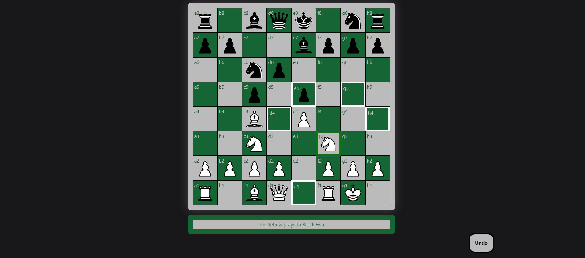
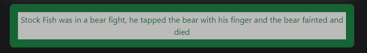
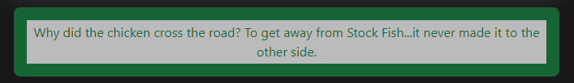
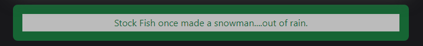

Jacob Davis
Chess Against Stockfish
Stockfish is currently the best chess AI and it has a free API that returns the best possible move for any given chess position. Three teammates and I created a website where users can play chess against Stockfish. We all play chess on chess.com, so we jokingly titled our project NotChess.com.
Live Website:
https://wickerprison.github.io/Chess/GitHub Page:
https://github.com/WickerPrison/ChessThis website was built with Tailwind, HTML, CSS, JavaScript, and the Stockfish API.
I was the team lead on this project. I did the majority of the work relating directly to interfacing with the Stockfish API and contributed about 50% of the JavaScript work. I also made some small contributions to the UI/UX, such as animating the pieces moving.
Fully Functional Chess
We programmed a fully functional chess game in JavaScript, including relatively obscure rules such as en passant and not being allowed to castle through a check.
Stockfish Jokes
As a fun bonus, we also utilized an API that produces Chuck Norris jokes but we replaced the name Chuck Norris with Stockfish so that we could provide the user with humorous “facts” about Stockfish.
  